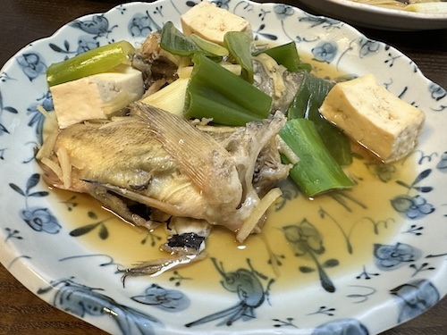

北海道のさかな - 2024/06/16 雨
日本一周の路銀を稼ぐべく、北海道の漁師さん宅で漁業のお手伝いバイト中のTSUBASAくん。
利尻島から本場の魚を送ってくれました。
 クロメヌケ、ニシン、ホッケ、エゾメバル（ガヤ）計13匹。
クロメヌケ、ニシン、ホッケ、エゾメバル（ガヤ）計13匹。
どれもでかくて暫くは魚料理の研究しなくちゃです。
つばさありがとー！
利尻島から本場の魚を送ってくれました。
どれもでかくて暫くは魚料理の研究しなくちゃです。
つばさありがとー！
